To see whether the tools help, the same model was given the same one-line request twice: once with plain Blender, where it writes code, renders and looks at the result, and once with Blender Studio. This cycle covers Claude Haiku 4.5, Haiku 5.5, Sonnet 5.5 and Opus 5.5 on eight requests chosen to need people, physics, organic shapes, ready-made models, glass and video. Claude Opus 5.5 judged each pair blind, under neutral file names, and first ticked a short checklist of what each request asked for.
Tokens are the units AI models read and write in, and what they are billed by. "Tokens read" counts everything sent to the model across all its requests, including repeats.
Claude Haiku 4.5 Ceramic mug product shot
Plain Blender
Render 12 of 12
- Judge: 1.0 / 10
- Checklist: 0 of 4 met
- 1810 s total, 142 s on the model
- 14k tokens written, 840k read
- 35 tool calls, 1 failed
Blender Studiojudged better
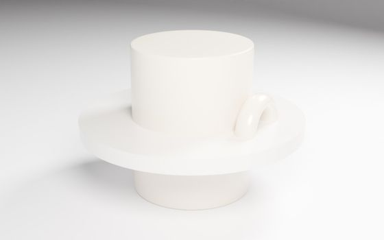
Render 4 of 4- Judge: 3.5 / 10
- Checklist: 3 of 4 met
- 136 s total, 35 s on the model
- 3k tokens written, 164k read
- 21 tool calls, 2 failed
Judge: “The first picture shows a recognisable white mug and saucer, cleanly lit on a seamless backdrop, but the saucer cuts through the middle of a solid, uncut cylinder; the second shows only the blurred edge of a white disc over grey, with no mug at all.”
Claude Haiku 4.5 Rocky hillside
Plain Blender
 Render 17 of 17
Render 17 of 17- Judge: 1.0 / 10
- Checklist: 0 of 4 met
- 1913 s total, 163 s on the model
- 19k tokens written, 1039k read
- 40 tool calls, 4 failed
- Did not finish: it used all 40 turns
Blender Studiojudged better
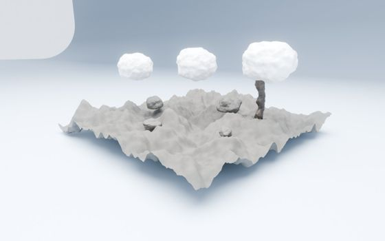
Render 7 of 7- Judge: 3.0 / 10
- Checklist: 2 of 4 met
- 801 s total, 69 s on the model
- 7k tokens written, 427k read
- 38 tool calls, 0 failed
Judge: “The first picture is an almost empty grey frame with no hillside, boulders, tree or clouds, while the second at least shows a terrain patch with boulders, a crude tree trunk and puffy low clouds, even though it reads as a flat, untextured floating diorama rather than a hillside.”
Claude Haiku 4.5 Three people at a bus stop
Plain Blender
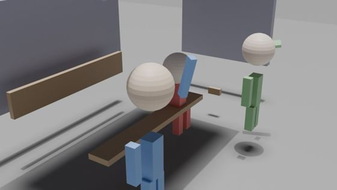
Render 12 of 12- Judge: 1.5 / 10
- Checklist: 2 of 5 met
- 3075 s total, 108 s on the model
- 13k tokens written, 502k read
- 28 tool calls, 2 failed
Blender Studiojudged better
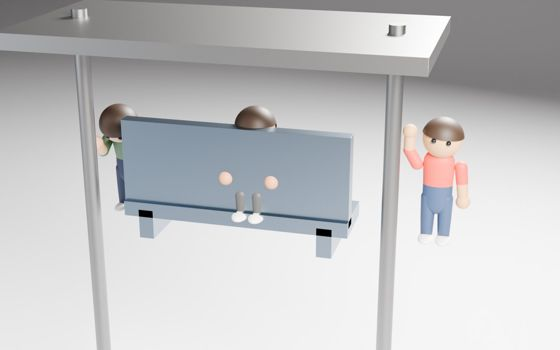
Render 14 of 14- Judge: 4.0 / 10
- Checklist: 4 of 5 met
- 3075 s total, 109 s on the model
- 9k tokens written, 1006k read
- 52 tool calls, 2 failed
Judge: “The second picture has a recognisable bus shelter, a clear waving figure and well-made character models, though the bench hides the sitting figure and the watch-checker, while the first is a broken arrangement of blocks with floating heads and nothing that reads as a bus stop.”
Claude Haiku 4.5 Spilled toy blocks and a cloth
Plain Blender
 Render 4 of 4
Render 4 of 4- Judge: 2.0 / 10
- Checklist: 2 of 4 met
- 69 s total, 57 s on the model
- 6k tokens written, 122k read
- 12 tool calls, 3 failed
Blender Studiojudged better
 Render 6 of 6
Render 6 of 6- Judge: 4.0 / 10
- Checklist: 1 of 4 met
- 221 s total, 58 s on the model
- 6k tokens written, 416k read
- 43 tool calls, 1 failed
Judge: “The first picture is cleanly lit and has a recognisable draped cloth, though it covers a box instead of the table corner and the blocks sit in a tidy cluster; the second has no cloth, its blocks float in mid-air away from their shadows, and its flat colours and grey void look unfinished.”
Claude Haiku 4.5 Reading corner
Plain Blender
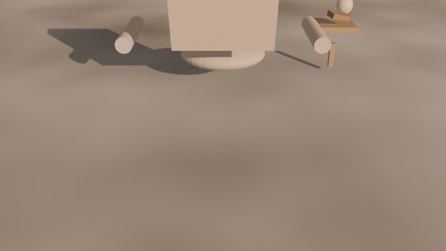
Render 10 of 10- Judge: 1.0 / 10
- Checklist: 1 of 4 met
- 116 s total, 158 s on the model
- 16k tokens written, 821k read
- 27 tool calls, 1 failed
- Did not finish: it used all 40 turns
Blender Studiojudged better
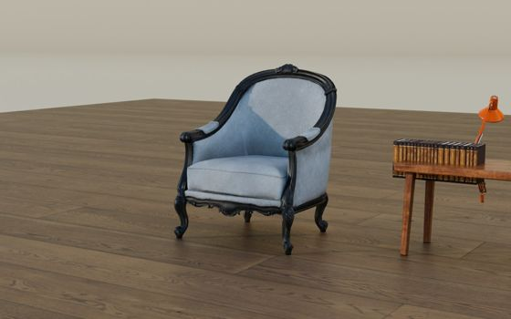
Render 11 of 11- Judge: 5.5 / 10
- Checklist: 3 of 4 met
- 268 s total, 81 s on the model
- 7k tokens written, 794k read
- 42 tool calls, 2 failed
Judge: “The second picture clearly shows a detailed armchair on a convincing plank floor with books and a lamp, though its light is neutral rather than warm evening; the first is a badly cropped set of plain blocks on a featureless floor that barely reads as an armchair.”
Claude Haiku 4.5 Glass perfume bottle
Plain Blender
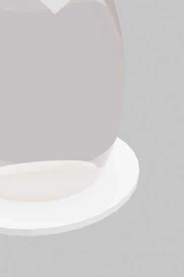
Render 11 of 11- Judge: 1.5 / 10
- Checklist: 0 of 3 met
- 8586 s total, 120 s on the model
- 13k tokens written, 661k read
- 33 tool calls, 6 failed
Blender Studiojudged better
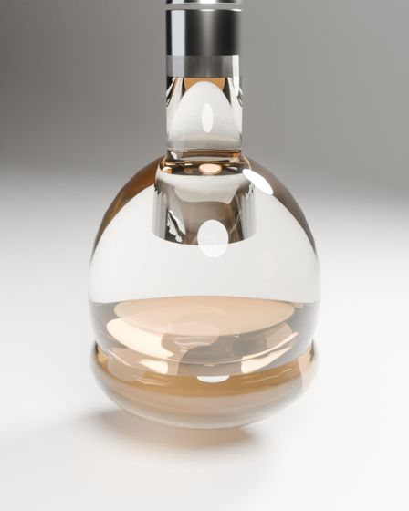
Render 6 of 6- Judge: 6.5 / 10
- Checklist: 3 of 3 met
- 319 s total, 60 s on the model
- 6k tokens written, 379k read
- 32 tool calls, 1 failed
Judge: “The second picture shows a clear glass bottle with refraction, amber liquid and a chrome cap in a clean studio setting, though the cap is cropped at the top; the first is a badly cropped, opaque grey shape on a plate with no visible cap and no glass quality.”
Claude Haiku 4.5 Swiss cheese with a bite
Plain Blender
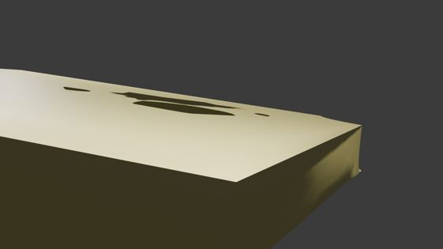
Render 9 of 9- Judge: 1.5 / 10
- Checklist: 0 of 3 met
- 103 s total, 74 s on the model
- 7k tokens written, 333k read
- 24 tool calls, 2 failed
Blender Studiojudged better
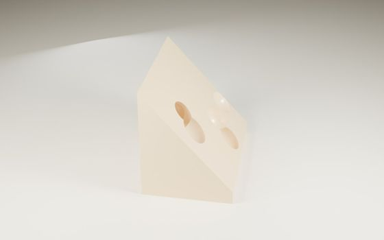
Render 11 of 11- Judge: 4.0 / 10
- Checklist: 2 of 3 met
- 325 s total, 90 s on the model
- 8k tokens written, 705k read
- 34 tool calls, 0 failed
Judge: “The second shows a recognisable wedge with clearly round holes, though it is washed out and has no bite, while the first is a cropped, warped slab with slit-like dents that reads as neither a wedge nor Swiss cheese.”
Claude Haiku 4.5 Robot walks in and waves (video)
Plain Blender
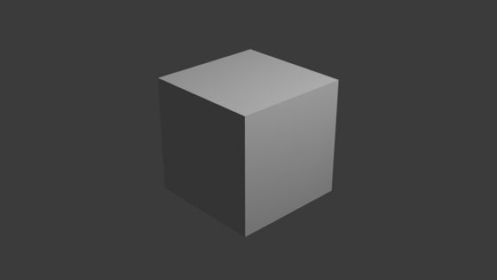
Render 14 of 14- Judge: 1.0 / 10
- Checklist: 0 of 4 met
- 482 s total, 130 s on the model
- 15k tokens written, 823k read
- 40 tool calls, 3 failed
- Did not finish: it used all 40 turns
Blender Studiojudged better
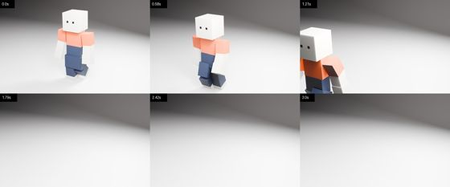
Render 3 of 3- Judge: 2.5 / 10
- Checklist: 1 of 4 met
- 681 s total, 48 s on the model
- 3k tokens written, 114k read
- 12 tool calls, 0 failed
Judge: “The first picture is only Blender's default grey cube with no robot and no motion, while the second shows a well-lit blocky toy robot that walks out of view instead of in, never waves, and leaves the last three frames empty.”
Claude Haiku 5.5 Ceramic mug product shot
Plain Blender
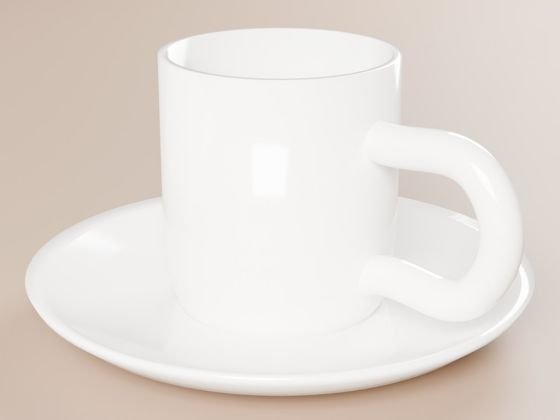
Render 3 of 3- Judge: 4.5 / 10
- Checklist: 4 of 4 met
- 285 s total, 33 s on the model
- 6k tokens written, 89k read
- 10 tool calls, 1 failed
Blender Studiojudged better
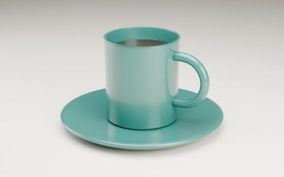
Render 3 of 3- Judge: 7.0 / 10
- Checklist: 4 of 4 met
- 131 s total, 62 s on the model
- 12k tokens written, 221k read
- 14 tool calls, 0 failed
Judge: “The first is a clean, well-framed catalogue shot with coffee in the cup and the glaze holding its form, even with a slightly faceted handle; the second's white mug is blown out with little shape, framed too tight, and has a handle that is badly attached.”
Claude Haiku 5.5 Rocky hillside
Plain Blender
 Render 4 of 4
Render 4 of 4- Judge: 3.5 / 10
- Checklist: 3 of 4 met
- 85 s total, 70 s on the model
- 15k tokens written, 160k read
- 9 tool calls, 0 failed
Blender Studio
 Render 7 of 7
Render 7 of 7- Judge: 4.5 / 10
- Checklist: 2 of 4 met
- 140 s total, 72 s on the model
- 14k tokens written, 662k read
- 60 tool calls, 2 failed
Judge: “The second picture has proper shadows, rocks with real sculpted detail and clouds that sit low in the scene. The first is flatly lit, uses the same noisy grey texture almost everywhere, cuts off the top of the tree and keeps its clouds high in the sky, even though its hill reads more clearly as rocky.”
The judge disagreed with itself when the order was swapped, so this counts as a tie.
Claude Haiku 5.5 Three people at a bus stop
Plain Blender
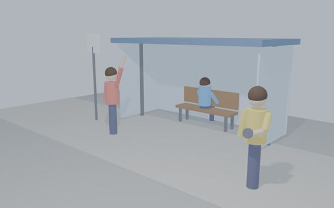
Render 3 of 3- Judge: 4.0 / 10
- Checklist: 4 of 5 met
- 42 s total, 32 s on the model
- 6k tokens written, 75k read
- 8 tool calls, 1 failed
Blender Studiojudged better
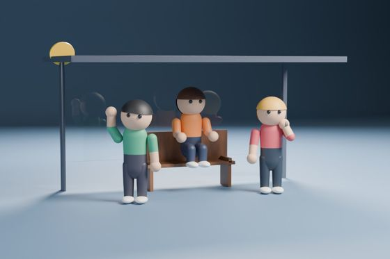
Render 4 of 4- Judge: 6.5 / 10
- Checklist: 4 of 5 met
- 134 s total, 44 s on the model
- 6k tokens written, 281k read
- 22 tool calls, 0 failed
Judge: “Only the first picture has a readable watch check (the second figure's hand to the mouth looks more like thinking), but its washed-out, low-contrast lighting and flat grey materials fall well short of the second's well-lit, appealing characters and clear bus-stop staging.”
Claude Haiku 5.5 Spilled toy blocks and a cloth
Plain Blender
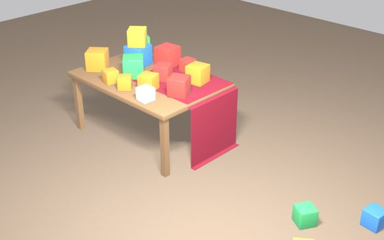
Render 4 of 4- Judge: 4.0 / 10
- Checklist: 3 of 4 met
- 66 s total, 54 s on the model
- 10k tokens written, 68k read
- 9 tool calls, 0 failed
Blender Studiojudged better
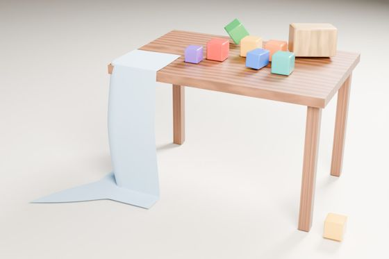
Render 6 of 6- Judge: 5.5 / 10
- Checklist: 2 of 4 met
- 305 s total, 148 s on the model
- 30k tokens written, 715k read
- 43 tool calls, 1 failed
Judge: “Neither cloth hangs in real folds, but the first has cleaner framing, softer and more considered lighting, and wood-grain materials, while the second is crowded, has blocks cropped at the frame edge and shows the bare edges of the set.”
Claude Haiku 5.5 Reading corner
Plain Blender
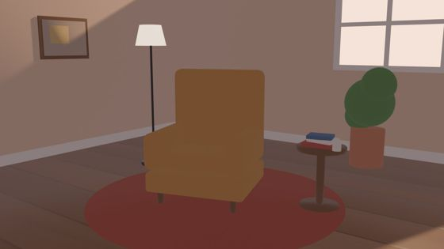
Render 3 of 3- Judge: 4.0 / 10
- Checklist: 4 of 4 met
- 85 s total, 64 s on the model
- 14k tokens written, 113k read
- 7 tool calls, 0 failed
Blender Studiojudged better
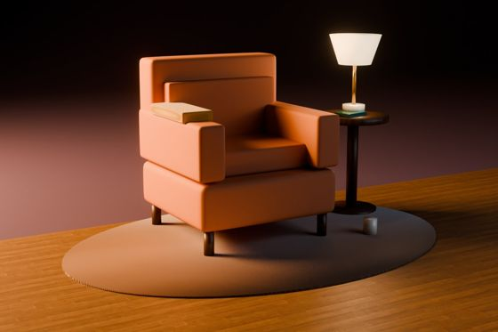
Render 9 of 9- Judge: 7.0 / 10
- Checklist: 4 of 4 met
- 184 s total, 67 s on the model
- 11k tokens written, 505k read
- 30 tool calls, 1 failed
Judge: “The first picture's glowing lamp, solid shading and grainy wooden floor give it real warmth and depth, even though the room fades into darkness; the second shows a fuller room, but its flat lighting and textureless surfaces make the chair look like a cutout and the evening light feel weak.”
Claude Haiku 5.5 Glass perfume bottle
Plain Blenderjudged better
 Render 3 of 3
Render 3 of 3- Judge: 8.0 / 10
- Checklist: 3 of 3 met
- 389 s total, 43 s on the model
- 7k tokens written, 117k read
- 11 tool calls, 0 failed
Blender Studio
 Render 4 of 4
Render 4 of 4- Judge: 4.0 / 10
- Checklist: 2 of 3 met
- 157 s total, 40 s on the model
- 7k tokens written, 222k read
- 20 tool calls, 0 failed
Judge: “The second picture's bottle is clearly glass, with real refraction and amber liquid under a bright chrome cap, while the first one's pink bottle looks like opaque plastic or a nail-polish bottle with no visible transparency.”
Claude Haiku 5.5 Swiss cheese with a bite
Plain Blender
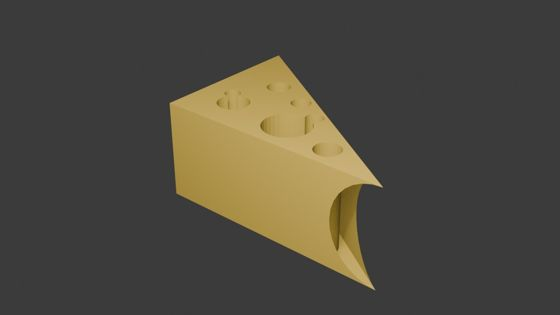
Render 3 of 3- Judge: 4.0 / 10
- Checklist: 3 of 3 met
- 30 s total, 22 s on the model
- 4k tokens written, 33k read
- 7 tool calls, 0 failed
Blender Studiojudged better
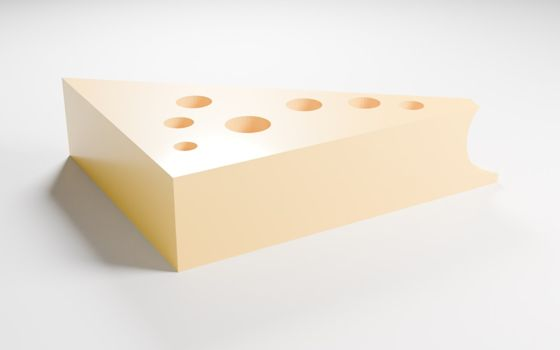
Render 2 of 2- Judge: 6.0 / 10
- Checklist: 3 of 3 met
- 125 s total, 22 s on the model
- 4k tokens written, 97k read
- 9 tool calls, 0 failed
Judge: “The first has a clean wedge with neat round holes, a scalloped bite and a soft studio setting, even though the highlights are blown out; the second sits on a flat grey viewport-style background, its holes overlap in a messy way, and its bite is one big scoop.”
Claude Haiku 5.5 Robot walks in and waves (video)
Plain Blenderjudged better
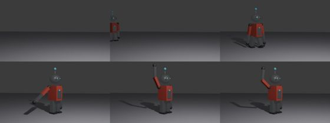
Render 4 of 4- Judge: 5.5 / 10
- Checklist: 4 of 4 met
- 358 s total, 93 s on the model
- 22k tokens written, 278k read
- 14 tool calls, 3 failed
Blender Studio
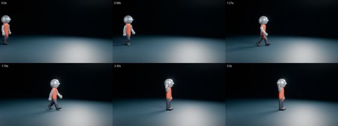
Render 6 of 6- Judge: 5.5 / 10
- Checklist: 3 of 4 met
- 689 s total, 58 s on the model
- 11k tokens written, 431k read
- 40 tool calls, 0 failed
Judge: “The first has nicer spotlight lighting and a smooth walk, but its robot only lifts a hand near its head in a way that doesn't read as a wave; the second, despite flat grey lighting, plain materials, a cropped entry frame and a big jump in robot size between frames, clearly walks into view and waves.”
Claude Sonnet 5.5 Ceramic mug product shot
Plain Blender
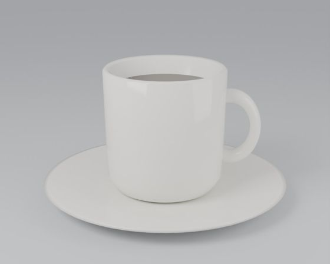
Render 4 of 4- Judge: 5.5 / 10
- Checklist: 4 of 4 met
- 128 s total, 16 s on the model
- 2k tokens written, 31k read
- 8 tool calls, 0 failed
Blender Studiojudged better
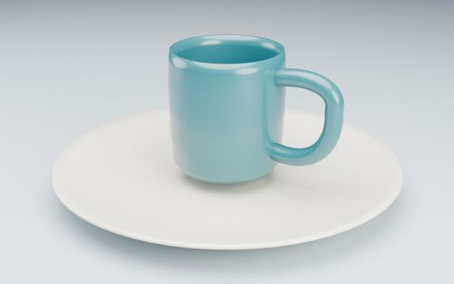
Render 3 of 3- Judge: 6.0 / 10
- Checklist: 4 of 4 met
- 92 s total, 18 s on the model
- 2k tokens written, 78k read
- 10 tool calls, 0 failed
Judge: “The teal glaze against the white saucer gives the second picture contrast, clear highlights and a catalogue feel, despite its oversized plate-like saucer and slightly lumpy handle; the first is an all-white, flatly lit scene with grey, lifeless coffee that blends into the background.”
Claude Sonnet 5.5 Rocky hillside
Plain Blender
 Render 4 of 4
Render 4 of 4- Judge: 5.0 / 10
- Checklist: 2 of 4 met
- 87 s total, 23 s on the model
- 3k tokens written, 36k read
- 8 tool calls, 1 failed
Blender Studio
 Render 4 of 4
Render 4 of 4- Judge: 4.5 / 10
- Checklist: 3 of 4 met
- 94 s total, 32 s on the model
- 4k tokens written, 171k read
- 28 tool calls, 0 failed
Judge: “The second picture shows a real rising hillside with large boulders and low clouds hugging the slope, while the first has glossy, plastic-looking clouds and tree on rolling ground that doesn't read as a hillside, even though its tree is more twisted.”
The judge disagreed with itself when the order was swapped, so this counts as a tie.
Claude Sonnet 5.5 Three people at a bus stop
Plain Blender
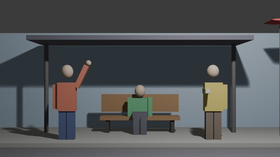
Render 2 of 2- Judge: 5.5 / 10
- Checklist: 5 of 5 met
- 46 s total, 20 s on the model
- 3k tokens written, 16k read
- 4 tool calls, 0 failed
Blender Studio
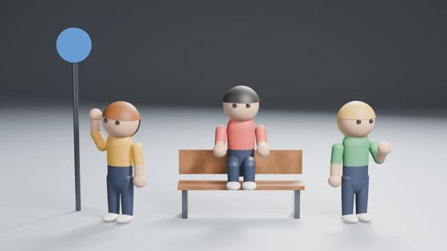
Render 1 of 1- Judge: 6.0 / 10
- Checklist: 4 of 5 met
- 49 s total, 17 s on the model
- 2k tokens written, 74k read
- 16 tool calls, 0 failed
Judge: “The first picture covers the brief more fully, with a real shelter and a visible watch, but its blocky figures face away from us and look crude, while the second is far more appealing with its soft lighting and characterful figures, even though the watch is missing and the seated figure floats oddly above the bench.”
The judge disagreed with itself when the order was swapped, so this counts as a tie.
Claude Sonnet 5.5 Spilled toy blocks and a cloth
Plain Blender
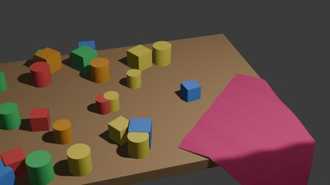
Render 1 of 1- Judge: 5.0 / 10
- Checklist: 4 of 4 met
- 16 s total, 11 s on the model
- 2k tokens written, 7k read
- 2 tool calls, 0 failed
Blender Studiojudged better
 Render 2 of 2
Render 2 of 2- Judge: 6.0 / 10
- Checklist: 2 of 4 met
- 137 s total, 26 s on the model
- 3k tokens written, 151k read
- 15 tool calls, 0 failed
Judge: “The first is a cleaner, well-framed picture of a whole table, even though its cloth barely hangs over the edge and its wood grain is odd wavy stripes; the second shows the request more literally, with tilted and stacked blocks and a hanging cloth, but it's cropped awkwardly, has no visible table legs, and its flat materials and drab grey background look like an unfinished test render.”
Claude Sonnet 5.5 Reading corner
Plain Blender
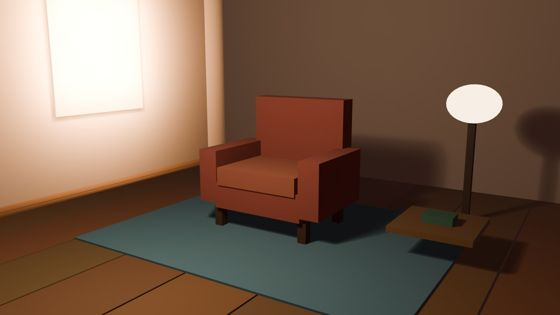
Render 1 of 1- Judge: 5.0 / 10
- Checklist: 4 of 4 met
- 31 s total, 15 s on the model
- 2k tokens written, 8k read
- 2 tool calls, 0 failed
Blender Studiojudged better
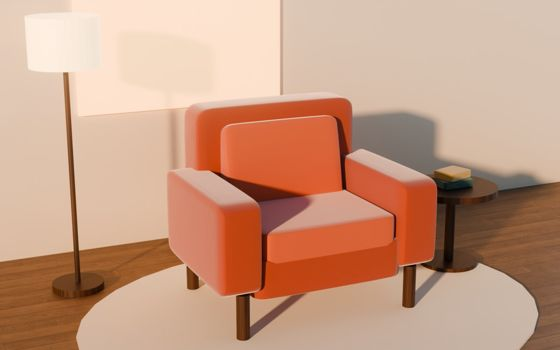
Render 3 of 3- Judge: 7.5 / 10
- Checklist: 4 of 4 met
- 193 s total, 27 s on the model
- 3k tokens written, 126k read
- 13 tool calls, 0 failed
Judge: “The first picture has a well-modelled armchair, a believable wood-grain floor, a rug, a lamp and books, all in soft warm light, while the second is made of crude blocky shapes with flat, oversized floorboards and a side table that seems to float without legs.”
Claude Sonnet 5.5 Glass perfume bottle
Plain Blenderjudged better
 Render 4 of 4
Render 4 of 4- Judge: 5.5 / 10
- Checklist: 3 of 3 met
- 998 s total, 22 s on the model
- 3k tokens written, 32k read
- 8 tool calls, 0 failed
Blender Studio
 Render 6 of 6
Render 6 of 6- Judge: 5.0 / 10
- Checklist: 2 of 3 met
- 594 s total, 27 s on the model
- 3k tokens written, 174k read
- 18 tool calls, 0 failed
Judge: “The first bottle reads more clearly as clear glass, with see-through edges and a believable reflection, but its flat gold liquid looks opaque; the second has better mood, yet its frosted body and glowing, solid-looking liquid read like a plastic lamp, and its cap highlights are blown out.”
Claude Sonnet 5.5 Swiss cheese with a bite
Plain Blender
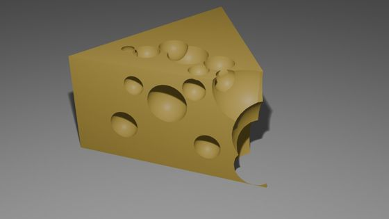
Render 3 of 3- Judge: 3.5 / 10
- Checklist: 3 of 3 met
- 47 s total, 18 s on the model
- 2k tokens written, 25k read
- 6 tool calls, 1 failed
Blender Studiojudged better
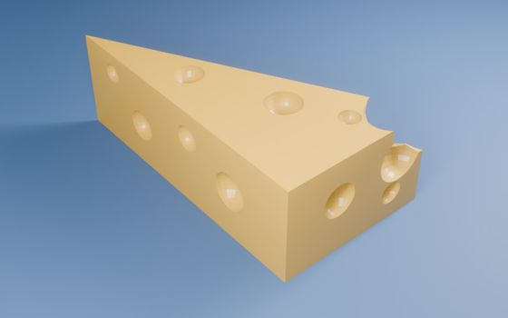
Render 2 of 2- Judge: 6.5 / 10
- Checklist: 3 of 3 met
- 60 s total, 18 s on the model
- 2k tokens written, 75k read
- 9 tool calls, 0 failed
Judge: “The first is a clean, readable wedge with tidy round holes and a scalloped bite at the corner, while the second has a confusing shape, a dull olive colour and broken see-through geometry where the bite is.”
Claude Sonnet 5.5 Robot walks in and waves (video)
Plain Blender
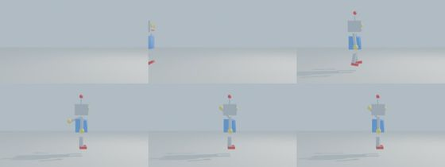
Render 5 of 5- Judge: 3.0 / 10
- Checklist: 2 of 4 met
- 91 s total, 34 s on the model
- 4k tokens written, 49k read
- 11 tool calls, 0 failed
Blender Studiojudged better
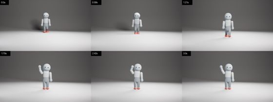
Render 1 of 1- Judge: 6.0 / 10
- Checklist: 4 of 4 met
- 111 s total, 13 s on the model
- 1k tokens written, 83k read
- 11 tool calls, 2 failed
Judge: “The first strip shows a clear, smooth walk toward the camera followed by an easy-to-read wave with soft studio lighting, while the second robot looks broken apart, is often cut off or turned side-on, gives no clear wave, and its last frames are almost the same.”
Claude Opus 5.5 Ceramic mug product shot
Plain Blenderjudged better
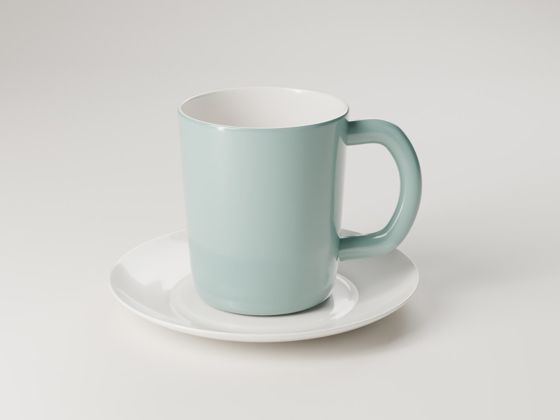
Render 4 of 4- Judge: 8.0 / 10
- Checklist: 4 of 4 met
- 1018 s total, 42 s on the model
- 4k tokens written, 54k read
- 10 tool calls, 0 failed
Blender Studio
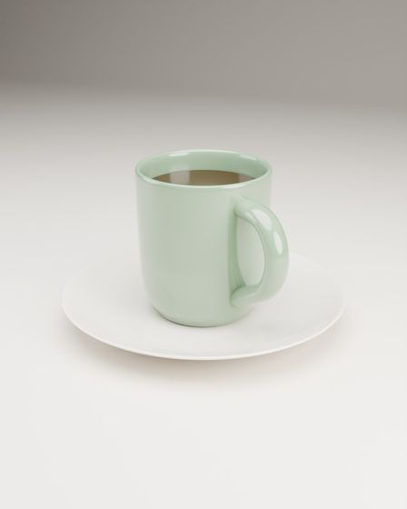
Render 3 of 3- Judge: 6.0 / 10
- Checklist: 3 of 4 met
- 129 s total, 36 s on the model
- 4k tokens written, 101k read
- 13 tool calls, 0 failed
Judge: “The first fills the frame with a well-modelled, cleanly lit glazed mug and saucer that looks ready for a catalogue, while the second leaves too much empty foreground, places the mug small in the frame and has coffee that looks metallic.”
Claude Opus 5.5 Rocky hillside
Plain Blenderjudged better
 Render 12 of 12
Render 12 of 12- Judge: 7.0 / 10
- Checklist: 4 of 4 met
- 1578 s total, 210 s on the model
- 24k tokens written, 548k read
- 34 tool calls, 2 failed
Blender Studio
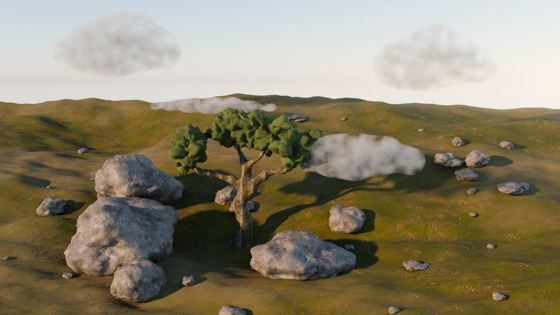
Render 5 of 5- Judge: 5.5 / 10
- Checklist: 3 of 4 met
- 257 s total, 116 s on the model
- 13k tokens written, 530k read
- 45 tool calls, 0 failed
Judge: “The first picture shows a real rising rocky slope with mist drifting across it, while the second has better textures and warm light but sits on nearly flat ground with a cloud that looks like a blob dropped on the grass.”
Claude Opus 5.5 Three people at a bus stop
Plain Blender
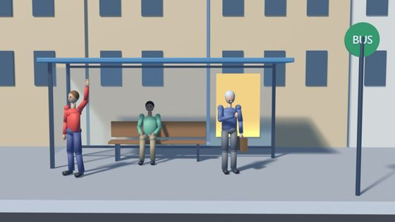
Render 4 of 4- Judge: 5.5 / 10
- Checklist: 5 of 5 met
- 123 s total, 88 s on the model
- 10k tokens written, 77k read
- 11 tool calls, 0 failed
Blender Studiojudged better
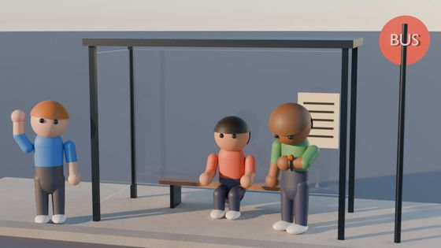
Render 6 of 6- Judge: 8.0 / 10
- Checklist: 5 of 5 met
- 224 s total, 70 s on the model
- 8k tokens written, 200k read
- 29 tool calls, 1 failed
Judge: “The first picture shows all three actions clearly, with a visible watch the person is looking down at, figures that fill the frame well and soft, warm lighting, while the second has small, stiff mannequin figures and a weak watch gesture that is hard to read.”
Claude Opus 5.5 Spilled toy blocks and a cloth
Plain Blenderjudged better
 Render 7 of 7
Render 7 of 7- Judge: 7.0 / 10
- Checklist: 4 of 4 met
- 1505 s total, 151 s on the model
- 16k tokens written, 266k read
- 24 tool calls, 0 failed
Blender Studio
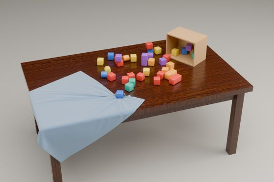
Render 4 of 4- Judge: 5.5 / 10
- Checklist: 4 of 4 met
- 437 s total, 131 s on the model
- 13k tokens written, 454k read
- 31 tool calls, 1 failed
Judge: “The second picture looks more like a real spill: the box is tipped over, blocks sit tilted, and some have fallen to the floor, while the first has an upright box, mostly upright blocks and an odd pinched knot in its cloth around a block.”
Claude Opus 5.5 Reading corner
Plain Blender
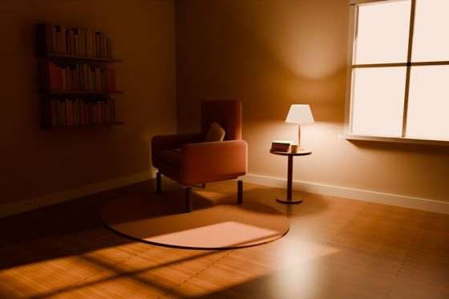
Render 5 of 5- Judge: 5.5 / 10
- Checklist: 4 of 4 met
- 1525 s total, 91 s on the model
- 10k tokens written, 117k read
- 13 tool calls, 0 failed
Blender Studiojudged better
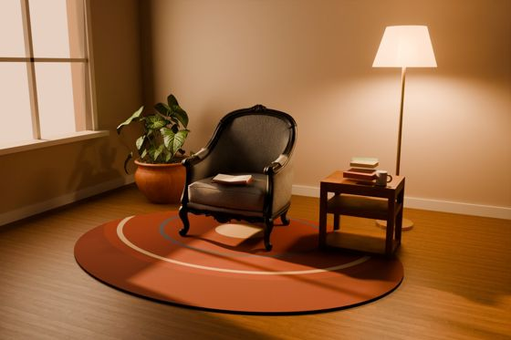
Render 5 of 5- Judge: 8.0 / 10
- Checklist: 4 of 4 met
- 305 s total, 97 s on the model
- 11k tokens written, 362k read
- 29 tool calls, 2 failed
Judge: “The second picture has a detailed, believable armchair, a patterned rug, a plant and well-chosen props under warm, balanced light, while the first is flat orange throughout, its armchair is blocky with legs that don't line up properly, and its rug and walls are plain.”
Claude Opus 5.5 Glass perfume bottle
Plain Blender
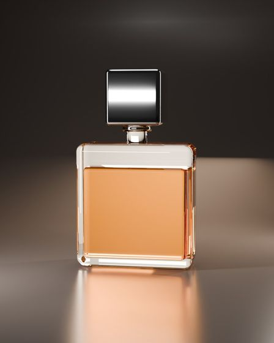
Render 7 of 7- Judge: 6.0 / 10
- Checklist: 3 of 3 met
- 3492 s total, 68 s on the model
- 7k tokens written, 110k read
- 15 tool calls, 0 failed
Blender Studiojudged better
 Render 9 of 9
Render 9 of 9- Judge: 8.0 / 10
- Checklist: 3 of 3 met
- 662 s total, 84 s on the model
- 8k tokens written, 375k read
- 23 tool calls, 0 failed
Judge: “The second has a backlit glow and deep amber liquid with believable glass thickness and refraction, which reads as true luxury, while the first's liquid looks flat and almost solid and its even lighting is plain.”
Claude Opus 5.5 Swiss cheese with a bite
Plain Blenderjudged better
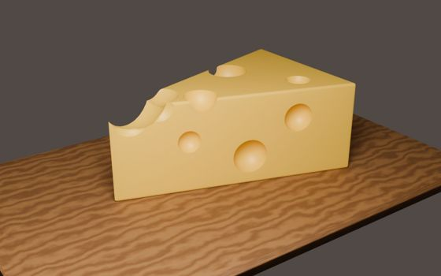
Render 4 of 4- Judge: 7.0 / 10
- Checklist: 3 of 3 met
- 220 s total, 37 s on the model
- 4k tokens written, 43k read
- 8 tool calls, 0 failed
Blender Studio
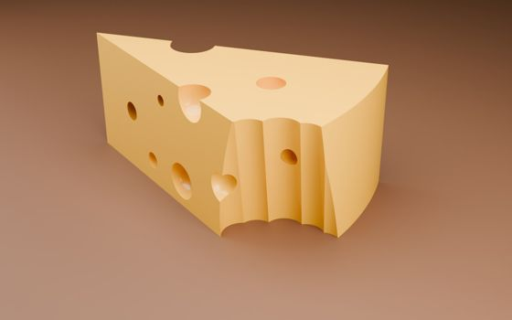
Render 7 of 7- Judge: 5.5 / 10
- Checklist: 3 of 3 met
- 493 s total, 89 s on the model
- 9k tokens written, 319k read
- 22 tool calls, 0 failed
Judge: “The second picture shows a clean wedge with neat round holes and a clear scalloped bite in one corner, while the first has a strange vertical fluted cut for its bite, odd heart-shaped holes and one hole on top that looks painted on, even though the second's wavy wood board is a bit distracting.”
Claude Opus 5.5 Robot walks in and waves (video)
Plain Blender
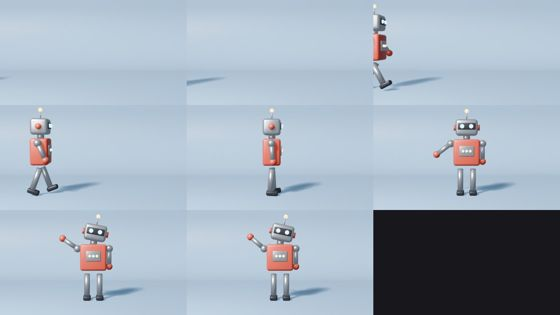
Render 4 of 4- Judge: 6.0 / 10
- Checklist: 4 of 4 met
- 526 s total, 72 s on the model
- 7k tokens written, 85k read
- 11 tool calls, 0 failed
Blender Studio
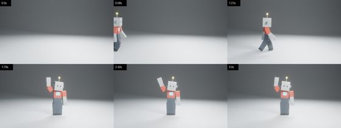
Render 2 of 2- Judge: 6.5 / 10
- Checklist: 4 of 4 met
- 1091 s total, 44 s on the model
- 4k tokens written, 140k read
- 17 tool calls, 0 failed
Judge: “The second robot looks more like a real toy, with appealing materials and a clear walk-in turning into a wave, which outweighs its flaws: its shadow appears before the robot does, the wave is low, and one strip cell is empty black, while the first robot looks crude and blocky despite its clear wave.”
The judge disagreed with itself when the order was swapped, so this counts as a tie.